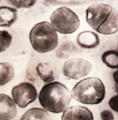
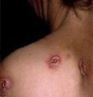

是由苍白(梅毒)螺旋体引起的慢性、系统性性传播疾病(VD,STD)。以阴部糜烂，外发皮疹，筋骨疼痛，皮肤起核而溃烂，神情痴呆为主要表现。绝大多数是通过性途径传播，临床上可表现为一期梅毒、二期梅毒、三期梅毒和潜伏梅毒。
-
- 一期梅毒：标志性临床特征是硬下疳(Chancre)
- 二期梅毒：标志性临床特征是硬下疳(Chancre)
- 三期梅毒：标志性临床特征是硬下疳(Chancre)
- 1
- 2
- 3
-
生殖器出现无痛性溃疡
全身出现铜红色皮疹
低热、头痛、肌肉和关节酸痛
损伤皮肤黏膜
内脏器官或组织
PSD免疫平衡疗法通过激活患者自体免疫系统，产生自体耐菌抗体，避免了梅毒再感染的机会，彻底解决了传统药物治疗治标不治本的难题。其运用特效中西药，在局部造成高浓度药离子，能够快速杀灭病毒，清除病毒产生...【详细】
优势一 高效杀菌 优势二 自体激活 优势三 杜绝复制 优势四 防止再生 优势五 中西结合
- 
-
梅毒临床表现多样，被称为模仿大师，临床易漏诊或误诊，从皮肤粘膜的表现到心血管、神经系统损害都可出现。还有部分患者无任何临床表现，但血清学检查阳性，称为隐性梅毒。早期梅毒在有症状的患者分为一期和二期梅毒。
-
梅毒临床表现多样，被称为模仿大师，临床易漏诊或误诊，从皮肤粘膜的表现到心血管、神经系统损害都可出现。还有部分患者无任何临床表现，但血清学检查阳性，称为隐性梅毒。早期梅毒在有症状的患者分为一期和二期梅毒。
-
梅毒临床表现多样，被称为模仿大师，临床易漏诊或误诊，从皮肤粘膜的表现到心血管、神经系统损害都可出现。还有部分患者无任何临床表现，但血清学检查阳性，称为隐性梅毒。早期梅毒在有症状的患者分为一期和二期梅毒。
-
梅毒临床表现多样，被称为模仿大师，临床易漏诊或误诊，从皮肤粘膜的表现到心血管、神经系统损害都可出现。还有部分患者无任何临床表现，但血清学检查阳性，称为隐性梅毒。早期梅毒在有症状的患者分为一期和二期梅毒。
-
梅毒临床表现多样，被称为模仿大师，临床易漏诊或误诊，从皮肤粘膜的表现到心血管、神经系统损害都可出现。还有部分患者无任何临床表现，但血清学检查阳性，称为隐性梅毒。早期梅毒在有症状的患者分为一期和二期梅毒。
 南宁中山医院是南宁市首家大型泌尿专科医院，是一所集临床、教学、科研、预防、保健、康复为一体的现代化专业男科医院。医院设施先进、专科齐全、技术力量雄厚、服务热情周到，是……
南宁中山医院是南宁市首家大型泌尿专科医院，是一所集临床、教学、科研、预防、保健、康复为一体的现代化专业男科医院。医院设施先进、专科齐全、技术力量雄厚、服务热情周到，是……


 许耕宇
主任医师
从事泌尿外科专业科研、教学与临床30余...
许耕宇
主任医师
从事泌尿外科专业科研、教学与临床30余... 患者：郭先生
患者：郭先生